Unit 7
Beyond Exact Dynamic Programming: Discretization and Static Optimization

4SC000, Q2 2026-2027
Duarte Antunes
Outline
- Discretization
- Unconstrained optimization
Introduction
- We have seen in the two previous lectures (5, 6) that for stage decision problems with quadratic costs and linear models we can compute analytically the costs-to-go of the DP algorithm and the optimal policy.
- However, linear models and quadratic costs is one of the few cases where this happens. In fact, we typically cannot run DP analytically.
Example of slide 11, lecture 5:
\[\text{Cost:} \quad \sum_{k=0}^1 x_k^2+u_k^2+g_2(x_2) \qquad g_2(x_2)=e^{x_2} \qquad \text{Model:} \ \ x_{k+1}=x_k+u_k\]
- In the next three lectures we will discuss three alternative methods and their pros and cons:
- Discretization (lecture 7)
- Static optimization (lecture 8)
- Approximate dynamic programming (lecture 9)
Discretization
Stage decision problems \(\quad \longrightarrow \quad\) Discrete optimization problems
\[x_{k+1}=f_k(x_k,u_k) \qquad \sum_{k=0}^{h-1}g_k(x_k,u_k)+g_h(x_h)\]
via state and input discretization.
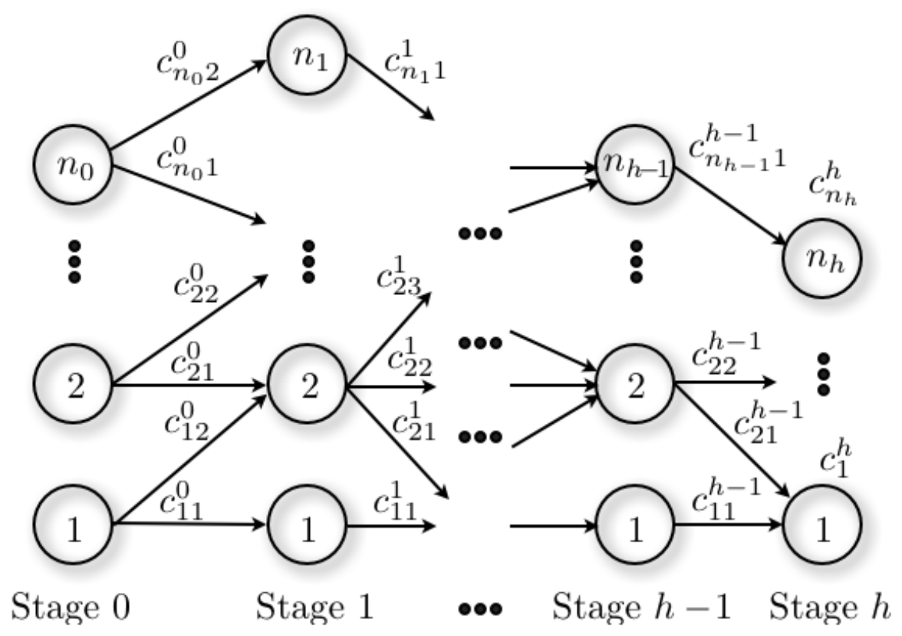
Stage decision problems can be approximated by a process called discretization (also denoted by sampling or quantization).
Example
\[\sum_{k=0}^1 x_k^2+u_k^2+g_2(x_2) \qquad x_{k+1}=x_k+u_k \qquad k\in\{0,1\}\]
\[g_2(x_2) = e^{x_2}\]
When \(g_2(x_2)=x_2^2\) we obtained (see lecture 5) the optimal policy and the optimal costs-to-go
\[u_0=-\frac{3}{5}x_0 \qquad u_1=-\frac{1}{2}x_1\]
\[J_0(x_0)=\frac{8}{5}x_0^2 \qquad J_1(x_1)=\frac{3}{2}x_1^2\]
We will now recover these functions using an alternative method (discretization) and then apply it to the problem with a non-quadratic terminal cost.
Example: discretization
Stage-decision problem \(\quad \displaystyle\sum_{k=0}^1 x_k^2+u_k^2+g_2(x_2) \qquad x_{k+1}=x_k+u_k \quad k\in\{0,1\}\)
Discretization
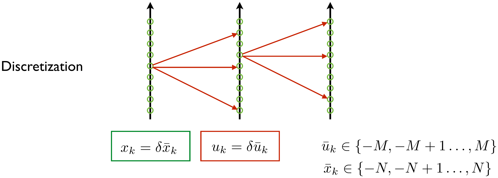
\[\bar u_k \in \{-M,-M+1\dots,M\} \qquad \bar x_k \in \{-N,-N+1\dots,N\}\]
Discrete optimization problem \(\quad \delta^2\big(\sum_{k=0}^1 \bar x_k^2+\bar u_k^2\big)+g_2(\delta\bar x_2) \qquad \bar x_{k+1}=\bar x_k+\bar u_k \quad k\in\{0,1\}\)
Results
When \(g_2(x_2)=x_2^2\) we indeed recover (approximately) the optimal policy
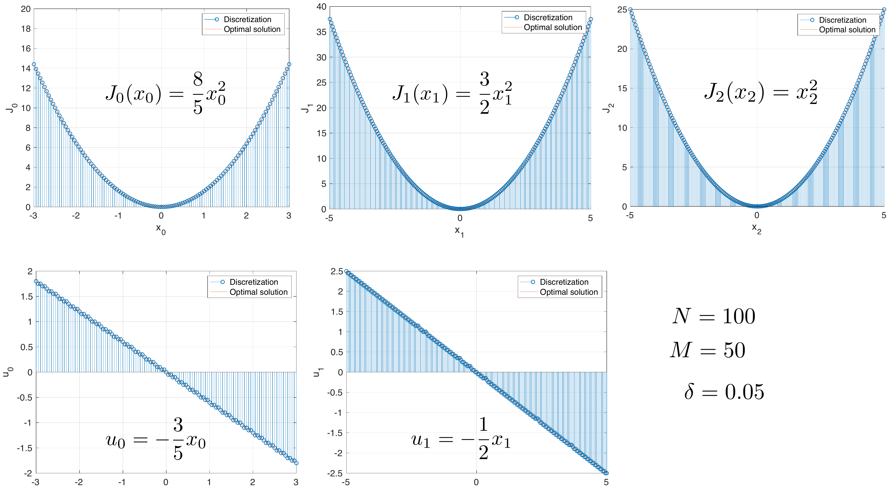
Results
Which encourages us to think that the optimal policy when \(g_2(x_2)=e^{x_2}\) can be (approximately) obtained with the same method
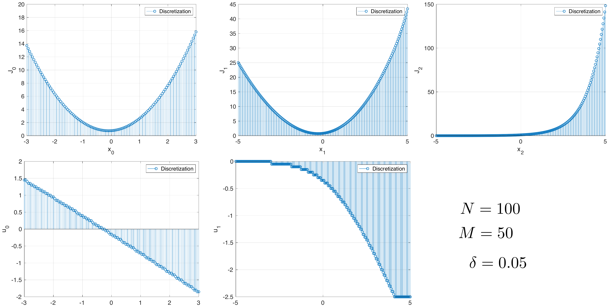
This statement can be formalised but we do not pursue this here.
Results
Note that the cost if the initial state \(x_0=1\) is \(2.64\)
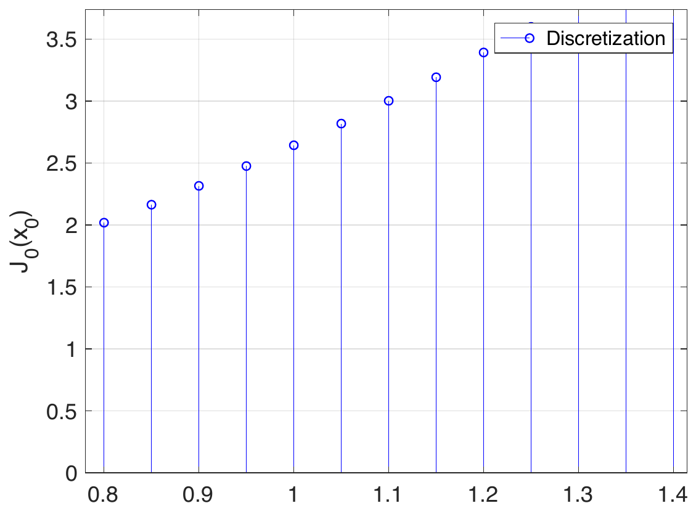
and corresponds to an initial control \(u_0=-0.7\) leading to state \(x_1=0.3\) and in turn to the control \(u_1=-0.45\)
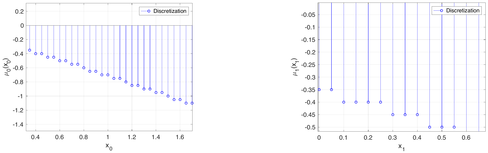
We will (approximately) obtain these values later with a different method!
Discussion
- We discuss next how to extend the discretisation method to the general case where the state belongs to \(\mathbb{R}^n\) with the help of the following example.
- Consider the following toy problem: compute the force to move a unitary mass 1 meter along a flat surface from rest to rest in 1 second with minimum energy.
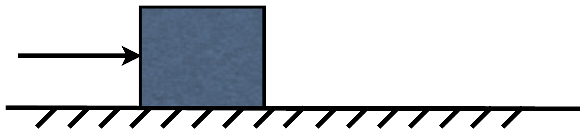
\[\ddot z(t)=u(t) \qquad z(0)=0 \quad z(1)=1 \qquad \min\int_0^1 u(t)^2dt \qquad \dot z(0)=\dot z(1)=0\]
- Later in the course we will learn the tools to find an optimal solution to this problem which is \(u(t)=6-12t\), resulting in \(v(t)=6t-6t^2\), \(x(t)=3t^2-2t^3\).
- To convert from continuous to discrete time we also need temporal discretization.
Discretization
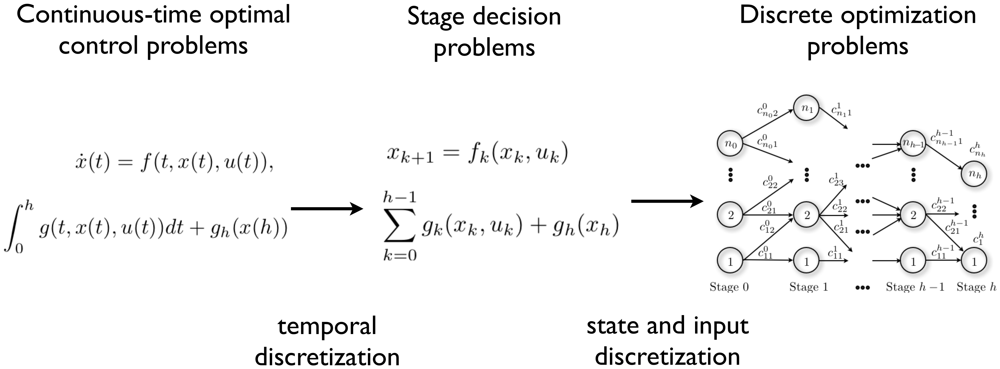
Digital control
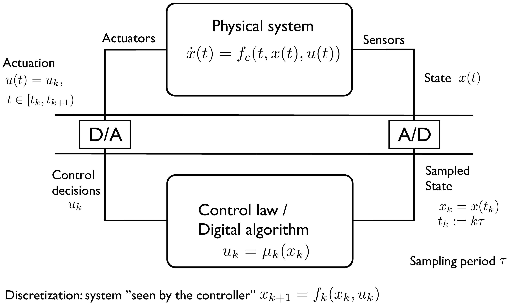
Discretization: system “seen by the controller” \(x_{k+1}=f_k(x_k,u_k)\)
Temporal discretization
- Solve the differential equation \(\dot x(t)=f_c(t,x(t),u(t))\) in \(t\in[t_k,t_{k+1})\) for an initial condition \(x(t_k)=x_k\) and a constant control input \(u(t)=u_k\) and evaluate at \(t=t_{k+1}\)
\[x_k=x(t_k) \qquad x_{k+1}=x(t_{k+1})=f(x_k,u_k)\]
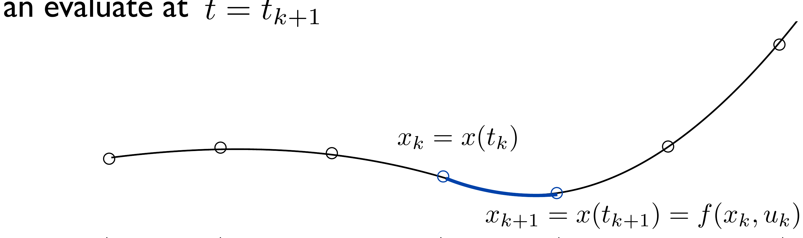
- For example if \(\dot x(t)=Ax(t)+Bu(t)\), use the variation of constants formula \(x(t)=e^{A(t-t_k)}x(t_k)+\int_{t_k}^t e^{A(t-s)}Bu(s)ds\) to conclude that
\[x_{k+1}=A_dx_k+B_du_k \qquad A_d=e^{A\tau}, \ \ B_d=\int_0^\tau e^{As}ds\,B\]
Double integrator
Model \(\quad \begin{bmatrix}\dot z(t)\\ \dot v(t)\end{bmatrix}=\begin{bmatrix}0&1\\0&0\end{bmatrix}\begin{bmatrix}z(t)\\v(t)\end{bmatrix}+\begin{bmatrix}0\\1\end{bmatrix}u(t) \quad\longrightarrow\quad \begin{bmatrix}z_{k+1}\\v_{k+1}\end{bmatrix}=\begin{bmatrix}1&\tau\\0&1\end{bmatrix}\begin{bmatrix}z_k\\v_k\end{bmatrix}+\begin{bmatrix}\tau^2/2\\\tau\end{bmatrix}u_k\)
\[u(t)=u_k, \ \ t\in[t_k,t_{k+1}) \qquad z_k=z(t_k) \quad v_k=v(t_k) \qquad K\tau=1 \quad t_{k+1}-t_k=\tau\]
Cost \(\quad \displaystyle\int_0^1 u(t)^2dt = \sum_{k=0}^{K-1}\int_{t_k}^{t_{k+1}} u_k^2\,dt \quad\longrightarrow\quad \tau\sum_{k=0}^{K-1}u_k^2\)
Initial and terminal conditions \(\quad z(0)=0, \ z(1)=1, \ \dot z(0)=\dot z(1)=0 \quad\longrightarrow\quad z_0=v_0=v_K=0, \ z_K=1\)
Optimal solution (can be obtained by LQR)
\[u_k=-R^{-1}B^\intercal\big((A^\intercal)^{-1}\big)^{k+1}\lambda_0 \qquad \lambda_0=M_{12}^{-1}\begin{bmatrix}1\\0\end{bmatrix} \qquad \begin{bmatrix}M_{11}&M_{12}\\M_{21}&M_{22}\end{bmatrix}=\begin{bmatrix}A&-BR^{-1}B^\intercal(A^\intercal)^{-1}\\0&(A^\intercal)^{-1}\end{bmatrix}^K\]
Solution
\(\tau=0.2\) and \(\tau=0.1\)
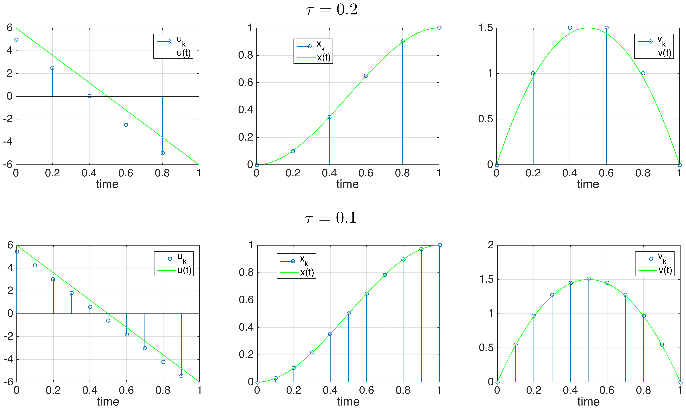
Solution
\(\tau=0.05\) and \(\tau=0.025\)
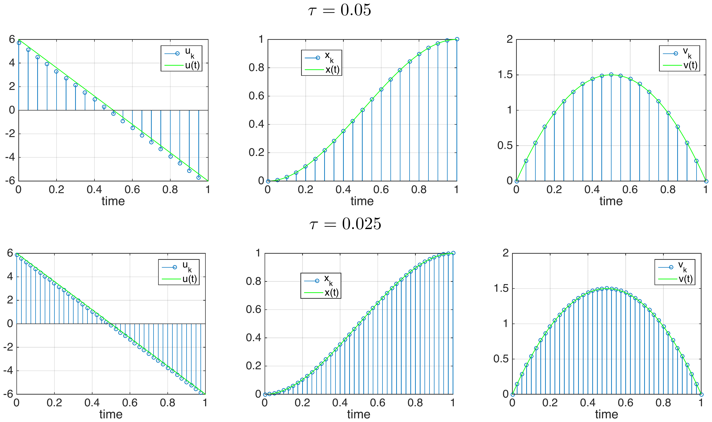
Discussion on temporal discretization
Dynamic model
- For non-linear systems discretization may be hard. A numerical method (e.g. Euler) is typically used
\[x_{k+1}=x_k+\tau f(t_k,x_k,u_k)\]
Cost function
- In the problem formulation, the state and input variables may already be penalized at sampling times.
\[\sum_{k=0}^{h-1}g_k(x(t_k),u(t_k))+g_h(x(T)) = \sum_{k=0}^{h-1}g_k(x_k,u_k)+g_h(x_h)\]
- Cost may result from discretizing a continuous-time cost function
\[\int_0^T g_c(t,x(t),u(t))dt = \sum_{k=0}^{h-1}\underbrace{\int_{t_k}^{t_{k+1}} g_c(t,x(t),u(t))dt}_{g_k(x_k,u_k)}\]
- We can also use the approximation
\[\int_0^T g_c(t,x(t),u(t))dt \approx \sum_{k=0}^{h-1}\tau\, g_c(k\tau,x_k,u_k)\]
State space \(\mathbb{R}^n\) and input space \(\mathbb{R}^m\)
For a general stage decision problem
\[g_0(x_0,u_0) \quad g_1(x_1,u_1) \quad \dots \quad g_{h-1}(x_{h-1},u_{h-1}) \quad g_h(x_h)\]
\[x_1=f_0(x_0,u_0) \qquad x_2=f_1(x_1,u_1) \qquad \dots \qquad x_h=f_{h-1}(x_{h-1},u_{h-1})\]
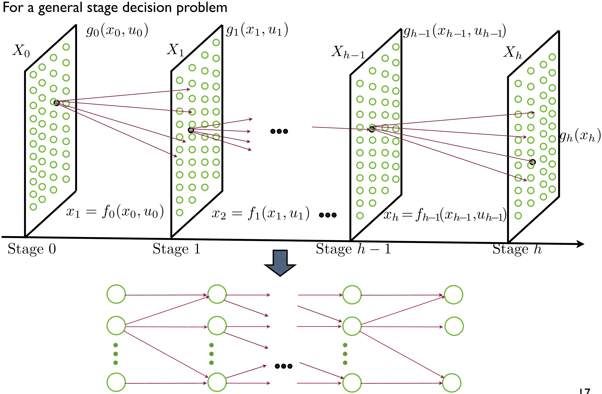
Example: discretization
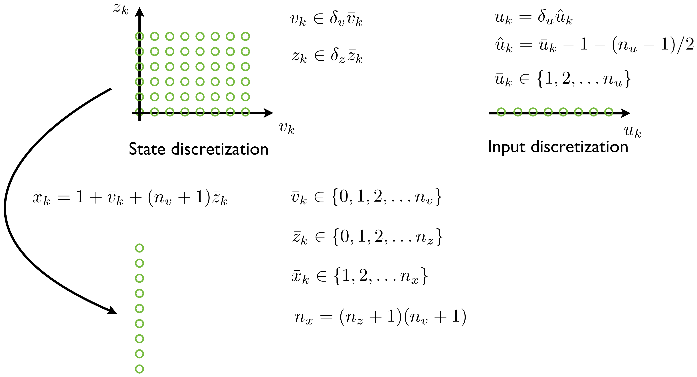
Example: model
\[\begin{bmatrix}z_{k+1}\\v_{k+1}\end{bmatrix}=\begin{bmatrix}1&\tau\\0&1\end{bmatrix}\begin{bmatrix}z_k\\v_k\end{bmatrix}+\begin{bmatrix}\tau^2/2\\\tau\end{bmatrix}u_k \quad\text{if}\quad \delta_z=\delta_u\tau^2/2, \ \ \delta_v=\delta_u\tau\]
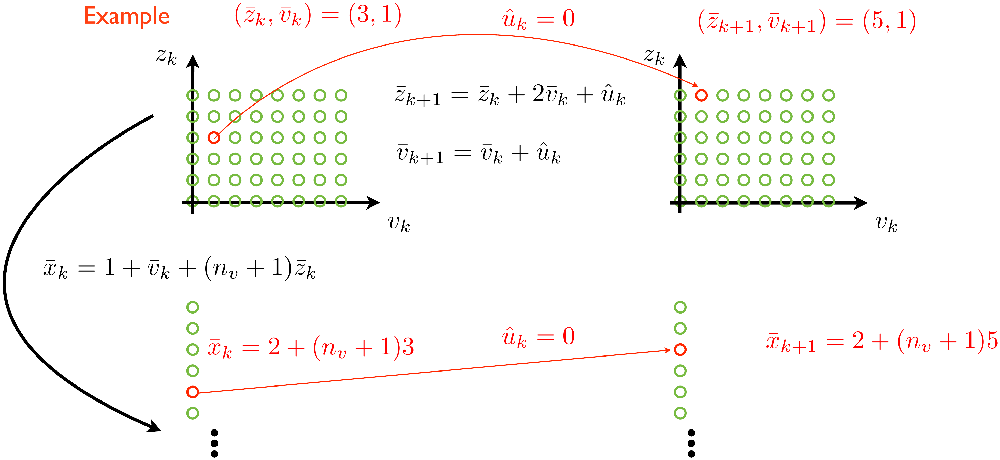
with this procedure we can obtain \(\bar x_{k+1}=f(\bar x_k,\bar u_k)\)
Example: cost and terminal conditions
Cost \(\quad \displaystyle\tau\sum_{k=0}^{K-1}u_k^2 \quad\longrightarrow\quad \tau\delta_u^2\sum_{k=0}^{K-1}\bar u_k^2 \qquad \bar u_k=\bar u_k-1-(n_u-1)/2\)
The terminal conditions can be imposed by making
\[J_h(\bar x_h) = \begin{cases}\infty & \text{otherwise} \\ 0 & \text{if } \bar x_h=1+0+(n_v+1)(n_z)\end{cases}\]
Initial condition \(\quad \bar x_0=1+0+(n_v+1)(0)=1\)
Solution
\(\tau=0.2\), \(\delta_u=1\) and \(\delta_u=0.5\)
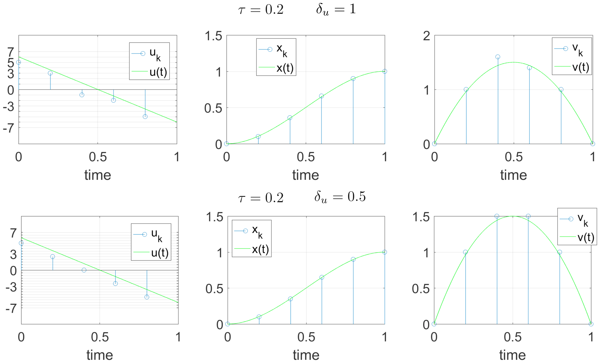
Solution
\(\tau=0.2\), \(\delta_u=0.1\) and \(\tau=0.1\), \(\delta_u=0.1\)
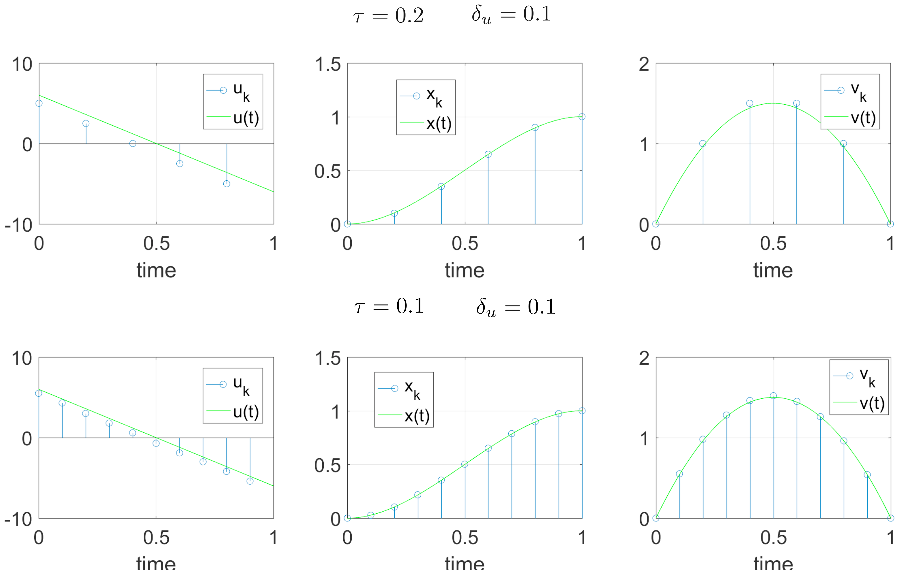
Solution
\(\tau=0.05\), \(\delta_u=0.2\) and \(\delta_u=0.1\)
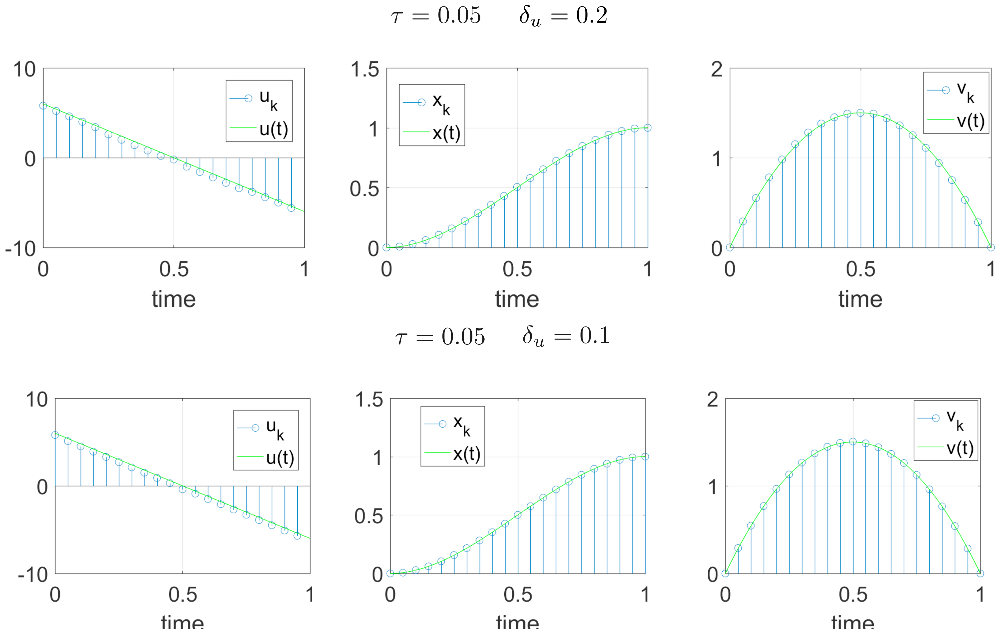
Discussion
- One can always use discretization for a general stage decision problem although it might be hard to circumvent some issues (as it might not be possible to obtain the final desired state exactly).
- Is DP then so powerful that we can solve any stage decision problem? (note that most digital control problems are stage decision problems).
- The answer is no: the discretization of state and input spaces is only computationally feasible when these spaces have a small dimension.
- Suppose that \(x_k\in\mathbb{R}^n\) and \(u_k\in\mathbb{R}^m\) and we discretize each component of the state with \(N\) values and each component of the input with \(M\) values. Then we need around \(N^n\) states per stage and around \(M^m\) decisions (arrows) per state.
- For example for the control of a quadcopter \(n=12\) and \(m=4\). Picking \(N=M=100\) we would need \(N^n=10^{24}\) states and \(M^m=10^8\) decisions per state per stage!
- Bellman called this the curse of dimensionality.
Outline
- Discretization
- Unconstrained optimization
Recap
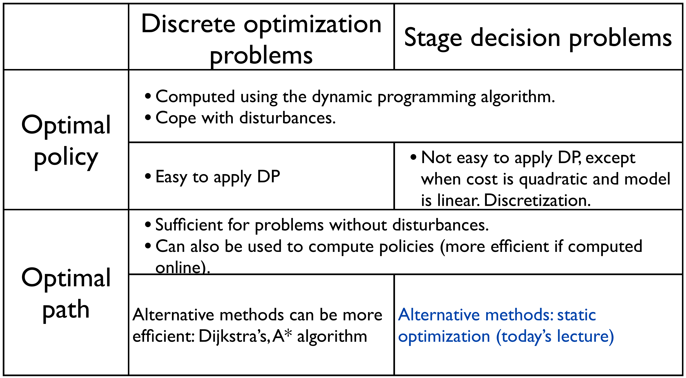
Motivation
We can write the problem we started with
\[\sum_{k=0}^1 x_k^2+u_k^2+g_2(x_2) \qquad g_2(x_2)=e^{x_2} \qquad x_{k+1}=x_k+u_k \qquad k\in\{0,1\} \qquad x_0=1\]
as an optimisation problem
\[\min_{y\in\mathbb{R}^n} c(y)\]
In fact, writing
\[x_1=x_0+u_0 \qquad x_2=x_1+u_1=x_0+u_0+u_1\]
we can reformulate the cost
\[x_0^2+u_0^2+x_1^2+u_1^2+e^{x_2} = x_0^2+u_0^2+(x_0+u_0)^2+u_1^2+e^{(x_0+u_0+u_1)}\]
which takes the desired form by making \(y=(u_0,u_1)\).
Unconstrained optimization
\[\min_{y\in\mathbb{R}^n} c(y)\]
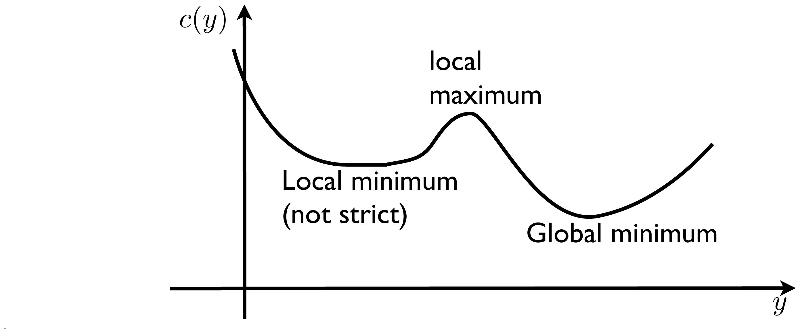
\(y^*\in\mathbb{R}^n\) is a:
- local minimum if there exists \(\epsilon>0\) such that for all \(y\in\mathbb{R}^n\) such that \(\|y-y^*\|<\epsilon\) we have
\[c(y^*)\leq c(y) \tag{1}\]
- strict minimum if (1) holds with strict inequality.
- global minimum if (1) holds for every \(y\in\mathbb{R}^n\).
Local, strict, and global maximum are defined similarly.
First order conditions
If \(c\in\mathcal{C}^1\), a necessary condition for \(y^*\) to be a minimum is that the gradient of \(c\) at \(y^*\) is zero
\[\nabla c(y^*)=0\]
that is, the \(n\) variables \((y_1^*,\dots,y_n^*)\) must satisfy the \(n\) equations
\[\nabla c(y^*) = \begin{bmatrix}\frac{\partial}{\partial y_1}c(y_1^*,\dots,y_n^*) & \dots & \frac{\partial}{\partial y_n}c(y_1^*,\dots,y_n^*)\end{bmatrix} = \begin{bmatrix}0 & \dots & 0\end{bmatrix}\]
Notation
- with some abuse of notation \(\nabla c(y^*)\) shall indicate \(\nabla c(y)|_{y=y^*}\)
- when convenient we will use \(\frac{\partial c}{\partial y}(y^*) \equiv \nabla c(y^*)\) or \(c_y(y^*) \equiv \nabla c(y^*)\)
- Note that by convention the gradient is a row vector.
Example
\[c(y)=y_1e^{-y_1^2-y_2^2} \qquad \nabla c(y)=e^{-y_1^2-y_2^2}\begin{bmatrix}-2y_1^2+1 & -2y_1y_2\end{bmatrix}\]
\(\nabla c(y)=0\) when
\[(y_1,y_2)=\Big(\tfrac{1}{\sqrt2},0\Big) \quad \text{maximum} \qquad (y_1,y_2)=\Big(-\tfrac{1}{\sqrt2},0\Big) \quad \text{minimum}\]
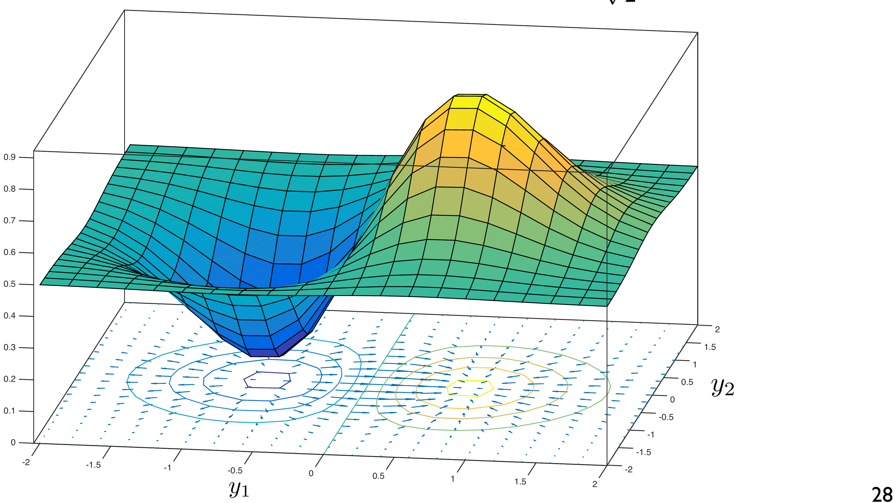
Second order conditions
Necessary conditions
If \(c\in\mathcal{C}^2\), a necessary condition for \(y^*\) to be a local minimum is that the Hessian is positive semi-definite
\[\nabla^2c(y^*)\geq0 \qquad \nabla^2c(y) = \begin{bmatrix}\frac{d^2c}{dy_1^2}(y) & \dots & \frac{d^2c}{dy_1dy_n}(y) \\ \dots & \dots & \dots \\ \frac{d^2c}{dy_ndy_1}(y) & \dots & \frac{d^2c}{dy_n^2}(y)\end{bmatrix}\]
Sufficient conditions
If \(c\in\mathcal{C}^2\) a sufficient condition for \(y^*\) to be a strict local minimum is
\[\nabla^2c(y^*)>0\]
Examples
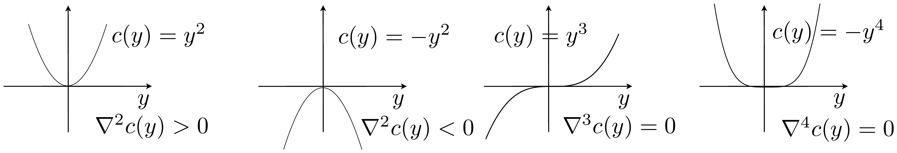
Convex functions
A function \(c:\mathbb{R}^n\to\mathbb{R}\) is convex if for every \(y_1\in\mathbb{R}^n\), \(y_2\in\mathbb{R}^n\), \(\alpha\in[0,1]\), we have
\[c(\alpha y_1+(1-\alpha)y_2) \leq \alpha c(y_1)+(1-\alpha)c(y_2)\]
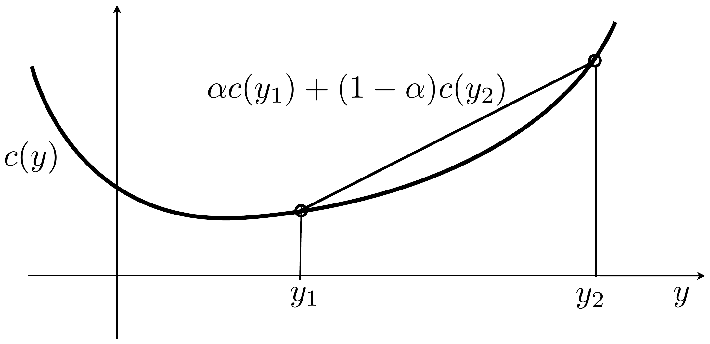
- If \(c\in\mathcal{C}^2\) then convexity is equivalent to \(\nabla^2c(y)\geq0, \ \forall y\in\mathbb{R}^n\).
- For convex functions \(c\in\mathcal{C}^1\), \(\nabla c(y^*)=0\) is (necessary and) sufficient for \(y^*\) to be a global minimum.
Gradient method, unconstrained opt.
\[\min_{y\in\mathbb{R}^n} c(y)\]
Given an initial estimate \(x_0\), iterate the method
\[x_{k+1} = x_k - \epsilon_k \nabla c(y)^\intercal|_{y=x_k}\]
until a certain stopping criterion is met (e.g. \(k>k_{\max}\) or \(\|\nabla c(y)|_{y=x_k}\|<\delta\))
Choice of the step \(\epsilon_k\)
- Ideally \(\epsilon_k\) is taken as the solution to \(\min_{\alpha\in\mathbb{R}_{\geq0}} c(x_k-\alpha\nabla c(y)^\intercal|_{y=x_k})\) but this requires a line search which might be computationally demanding
- The simplest choice would be \(\epsilon_k=\bar\epsilon\) but in general we need \(\epsilon_k\to0\), otherwise the method will (in the best case!) oscillate around the minimum. Small \(\bar\epsilon\): many iterations needed to get close to the minimum, large \(\bar\epsilon\): method might diverge.
- In practice a heuristic may be used guaranteeing that \(c(x_{k+1})<c(x_k)\) (e.g. Armijo’s rule)
Newton’s method (much faster)
- Choose the following descend direction \([\nabla^2c(y)]^{-1}\nabla c(y)^\intercal\) instead of \(\nabla c(y)^\intercal\)
Discussion
- These methods work very well for convex problems (cost and constraint functions are convex). For non-convex problems it is very hard to compute the minimum and the numerical methods have many issues (e.g. get stuck in local minima).
- There are many other numerical methods. For example for unconstrained problems, Newton and Quasi-Newton methods, conjugate gradient methods, etc. For constrained problems, Penalty, Barrier, and Augmented Lagrangian methods.
- A class of problems that can be solved very efficiently is quadratic programming
\[\min_x \ q(x)=\tfrac12 x^\intercal Gx+x^\intercal d \qquad \text{subject to} \quad a_i^\intercal x=b_i, \ \ i\in\mathcal{E}, \qquad a_i^\intercal x\geq b_i, \ \ i\in\mathcal{I}\]
and this allows to model linear quadratic control problems with input and state constraints.
- Two very good references if you want to know more about numerical optimization:
Numerical optimization. Jorge Nocedal, Stephen Wright, Springer, 1999
Convex optimization. Stephen Boyd, Lieven Vandenberghe, Cambridge University Press, 2004
Application to optimal control
Finding an optimal path for a stage decision problem
\[\min_{x,u} \ \sum_{k=0}^{h-1}g_k(x_k,u_k)+g_h(x_h) \qquad \text{s.t. } x_{k+1}=f(x_k,u_k) \quad k\in\{0,\dots,h-1\}\]
can be formulated as an unconstrained optimization problem, by writing the state variables in terms of the control inputs \(u=(u_0,u_1,\dots,u_{h-1})\) and the initial state \(x_0\) (which is given)
\[x_1=f(x_0,u_0)=F_1(x_0,u_0)=\bar F_1(x_0,u)\] \[x_2=f(f(x_0,u_0),u_1)=F_2(x_0,u_0,u_1)=\bar F_2(x_0,u)\] \[x_3=f(f(f(x_0,u_0),u_1),u_2)=F_3(x_0,u_0,u_1,u_2)=\bar F_3(x_0,u)\] \[\vdots\] \[x_h=f(f(\dots,f(x_0,u_0),u_1),u_2,\dots,u_{h-1})=F_h(x_0,u_0,\dots,u_{h-1})=\bar F_h(x_0,u)\]
Then we can consider the unconstrained optimization problem
\[\min_u c(u) \qquad c(u)=\sum_{k=0}^{h-1}g_k(\bar F_k(x_0,u),u_k)+g_h(\bar F_h(x_0,u)) \qquad \bar F_0(x_0,u)=x_0\]
Example
Consider again the following simple example
Dynamic model \(\quad x_{k+1}=x_k+u_k \quad k\in\{0,1\}\)
Cost \(\quad \displaystyle\sum_{k=0}^1 x_k^2+u_k^2+g_2(x_2)\)
| Terminal cost | |
|---|---|
| Quadratic | \(g_2(x_2)=x_2^2\) |
| Non-quadratic I | \(g_2(x_2)=e^{x_2}\) |
| Non-quadratic II | \(g_2(x_2)=\sqrt{|x_2|}\) |
Initial condition \(\quad x_0=1\)
Quadratic terminal cost
Step 1. Write the state variable as a function of the control inputs
\[x_1=x_0+u_0 \qquad x_2=x_1+u_1=x_0+u_0+u_1\]
Step 2. Write the cost function as a function of the control inputs
\[x_0^2+u_0^2+x_1^2+u_1^2+x_2^2 = x_0^2+u_0^2+(x_0+u_0)^2+(x_0+u_0+u_1)^2+u_1^2\]
\[= \begin{bmatrix}u_0\\u_1\end{bmatrix}^\intercal\begin{bmatrix}3&1\\1&2\end{bmatrix}\begin{bmatrix}u_0\\u_1\end{bmatrix}+x_0\begin{bmatrix}4&2\end{bmatrix}\begin{bmatrix}u_0\\u_1\end{bmatrix}+3x_0^2\]
Step 3. Find the optimal values of the control inputs \(u_0,u_1\) by differentiating and setting the derivative to zero
\[\begin{bmatrix}u_0\\u_1\end{bmatrix} = -\frac12\begin{bmatrix}3&1\\1&2\end{bmatrix}^{-1}\begin{bmatrix}4\\2\end{bmatrix}x_0 = \begin{bmatrix}-\frac35\\-\frac15\end{bmatrix}x_0 = \begin{bmatrix}-\frac35\\-\frac15\end{bmatrix} \quad (\text{when } x_0=1)\]
Step 4. Replace the values of \(u_0,u_1\) in the expression for the cost, leading to the value:
\[\text{cost:} \ \frac85\]
Non-quadratic terminal cost I
Step 1. Write the state variables as a function of the control inputs
\[x_1=x_0+u_0 \qquad x_2=x_1+u_1=x_0+u_0+u_1\]
Step 2. Write the cost function as a function of the control inputs
\[x_0^2+u_0^2+x_1^2+u_1^2+e^{x_2} = x_0^2+u_0^2+(x_0+u_0)^2+u_1^2+e^{(x_0+u_0+u_1)}\]
Step 3. Find the optimal values of the control inputs
- differentiating and setting the derivative to zero would lead to a system of non-linear equations - one could apply a numerical method to solve it, but in general this is difficult.
- One can apply the gradient method to find the optimal control input.
- Since there are only two scalar control inputs to be determined, one can simply plot the function.
Non-quadratic terminal cost I
Plot \(\quad h(u_0,u_1)=1+u_0^2+(1+u_0)^2+u_1^2+e^{1+u_0+u_1}\) (convex function!)
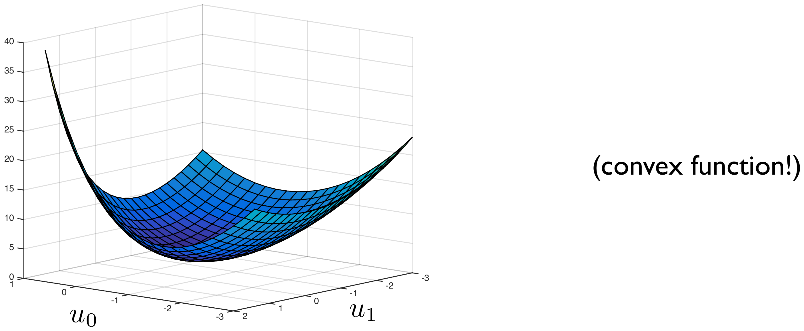
Gradient method with line search
\[u^{(k+1)}=u^{(k)}-\alpha_k\frac{\partial J}{\partial u}(u^{(k)}) \qquad \alpha_k=\underset{\alpha\in[0,1)}{\arg\min} \ J(u^{(k)}-\alpha a), \ \ a=\frac{\partial J}{\partial u}(u^{(k)}) \qquad u^{(k)}=[u_0^{(k)} \ \ u_1^{(k)}]\]
Numerical values using Matlab for two initial guesses (\(u^{(0)}=(1,1)\) and \(u^{(0)}=(0.1,1.5)\)): both converge to \(u^{(6)}\approx(-0.7157,-0.4315)\).
Step 4. Replace the values of \(u_0,u_1\) in the expression for the cost: \(h(-0.7157,-0.4315)=2.6424\)
Non-quadratic terminal cost II
Plot \(\quad 1+u_0^2+(1+u_0)^2+u_1^2+\sqrt{|1+u_0+u_1|}\) (non-convex function!)
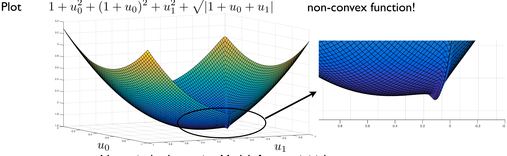
Gradient method with line search. Numerical values using Matlab for two initial guesses: \(u^{(0)}=(1,1) \to h(-0.5695,-0.1376)=1.6910\) and \(u^{(0)}=(-0.9,-0.6) \to h(-0.6667,-0.3333)=1.6669\).
For non-convex functions we may not be able to obtain the minimum with the gradient method!
Discussion
Optimal paths
- We were able to solve a problem (although numerically) that we could not solve analytically with DP - this relied on the convexity of the cost function. However, for non-convex functions it would be hard to solve it.
- We could have used discretization with DP to solve this problem, which is also a numerical method.
- Discretization is limited by the curse of dimensionality while static optimization problems can get stuck in local minima and are only guaranteed to work properly when the function is convex.
Conclusion
| dimension | convexity | DP discretization | Static optimization |
|---|---|---|---|
| small \(n\leq3\) | convex | ✓ | ✓ |
| small \(n\leq3\) | non-convex | ✓ | ✗ |
| large | convex | ✗ | ✓ |
| large | non-convex | ✗ | ✗ |
Concluding remarks
- State and input discretization: allows to transform any stage-decision problem into a discrete optimization problem.
- It is not feasible for problems with large input and state dimensions - curse of dimensionality.
- For linear systems we can exactly and easily obtain temporal discretizations.
4SC000 – Optimal Control and Reinforcement Learning